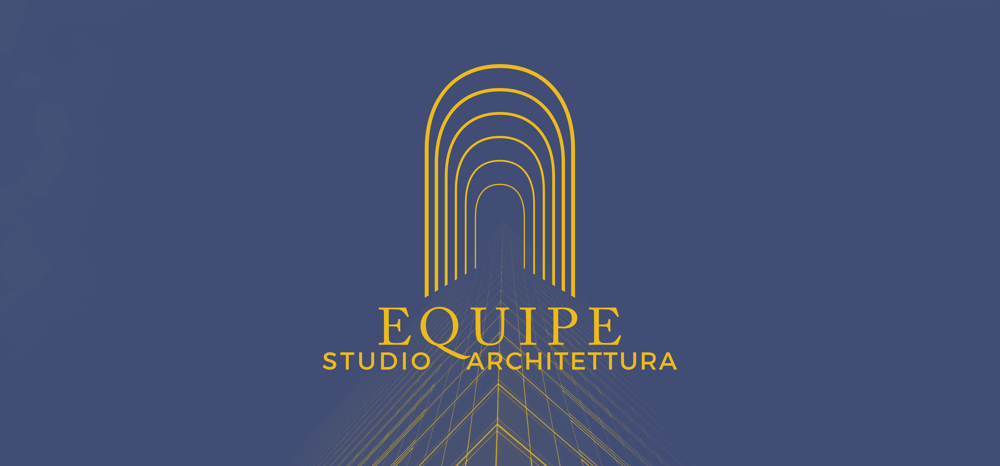

The logo takes its shape from the classical arch — structural by nature, built the same way Equipe designs its spaces: functional first, considered always.

Adobe Caslon Pro and Montserrat — one classical, one contemporary. Two colours, nothing more. Made to last, the way the studio’s work is made to last.
#414D75
#EEB91D
Identity in use since 2023.